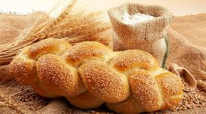

Una panadería es un establecimiento donde se hace,
se cuece y vende el pan y, de forma opcional, otros productos de pastelería.
Las modernas boutiques de pan han
incluido entre sus servicios otro tipo de consumiciones como el café, el té, etc.
El pan es uno de los alimentos más representativos de la cultura occidental.
Hemos preparado esta guía de compra para contártelo todo sobre el pan
(valor nutricional, tipos, mitos y verdades…)
y darte unos consejos que esperemos te ayuden cuando vayas a comprar.
PAN DE CENA
PAN DE MUERTO

PAN DE TRENZAS
price
Los precios en panaderías establecidas fluctúan de 6 a 12 pesos,
según la zona y la calidad del producto, debido a que los costos de insumos como
el azúcar, chocolate, huevo, grasas,algunas semillas y el transporte subieron
de 10 a 40 por ciento.